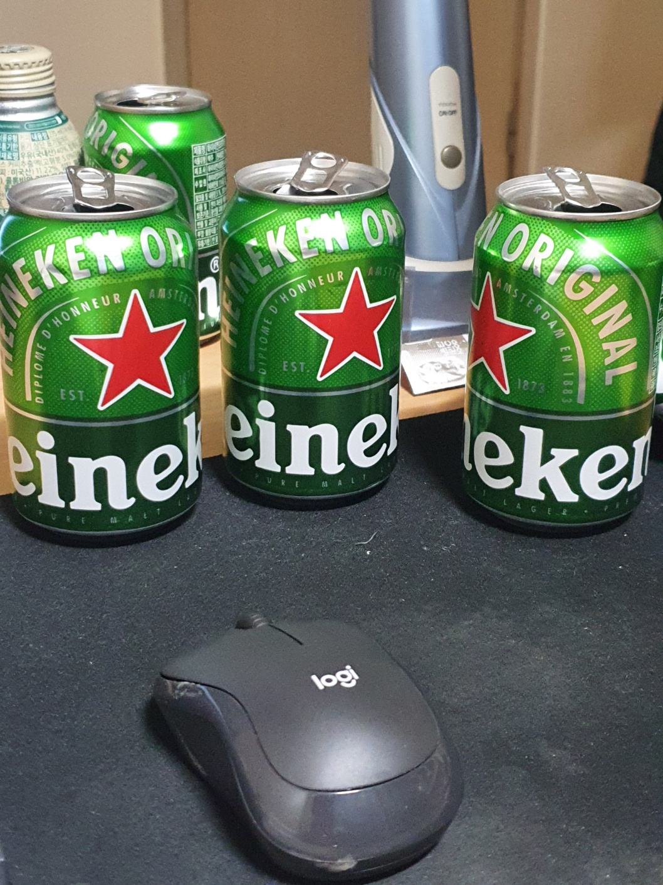
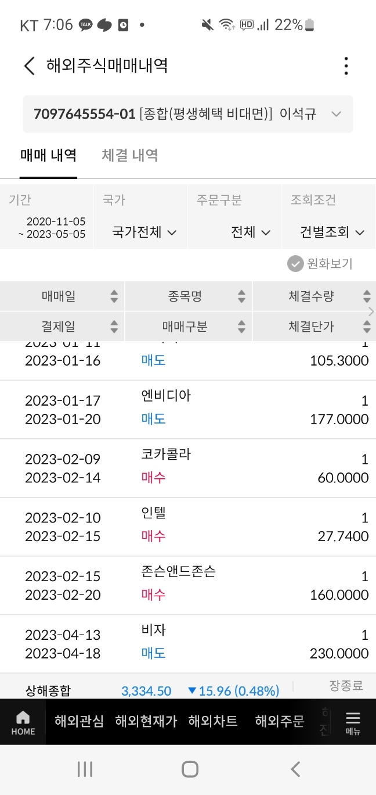

자기소개 웹페이지

자기 소개
• 소개 :
이름은 이석규. 나이는 26세. 육군 만기 제대한 컴공 4학년 학생이고, 매일 늦어도 저녁 8시까지는 귀가한다.
담배를 피고, 술은 즐기는 편. 새벽 1시에는 잠자리에 들고 반드시 5시간은 수면을 취하려 한다.
자기 전에는 따뜻한 물을 마시며 10분 동안 일기를 써서 하루를 끝내고, 잠자리에 들면 7시가 될 때까지 숙면을 취한다.
기본 정보
• 나이 : 26
• 거주지 : 경기도 이천
• 직업 : 대학생
학력
• 학교 : 단국대학교 죽전 캠퍼스
• 학과 : 컴퓨터공학과
• 입학 연도 : 2018
진로
• 1. 앱,웹 개발자
• 2. 게임 개발자(유니티)
진행한 project
• 자율주행 알고리즘(ros,py)
• 이미지,동영상 편집 프로그램(py)
• 머신러닝-와인 판별(py)
• nucleo_f411re를 사용한 태양광 시계(c,stm32)
• 회사 data management 앱(java, apache, php, mariaDB)
• 유기견 추천 앱(java, apache, php, mariaDB, google cloud function)
• 배달의 민족 앱 copy project(java, apache, php, mariaDB, google cloud function)
• 채팅 앱(java, apache, php, mariaDB)
기타
• 좋아하는 것 :
1. 술
2. 커피
3. 음악
4. 그림 그리기
5. 해외 우량주
• 싫어하는 것 :
1. 경쟁
2. 정치인
3. 수강신청
4. 국내 주식
5. 공기같은 팀원


• 최근 듣는 음악